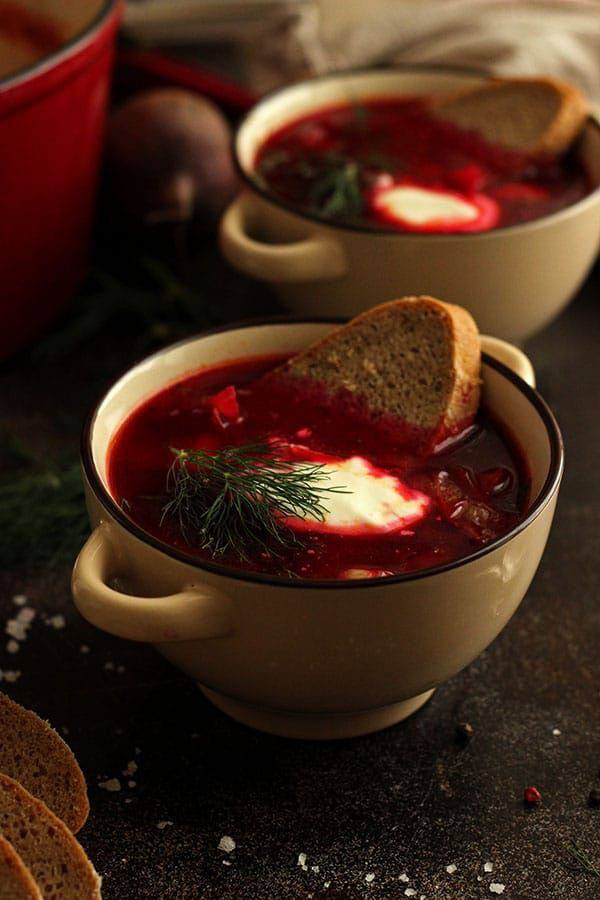
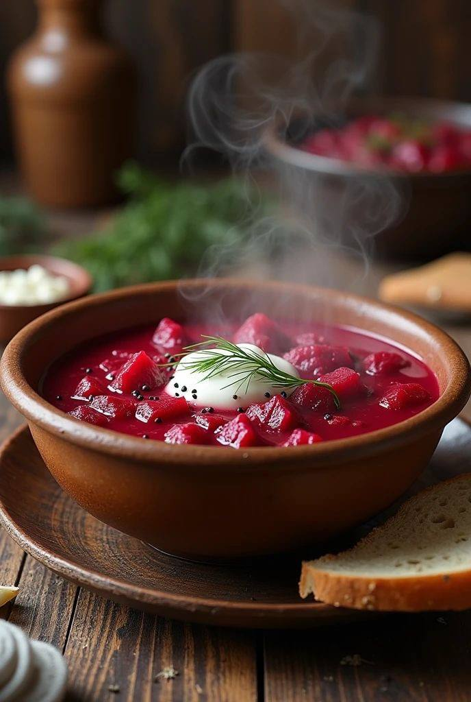
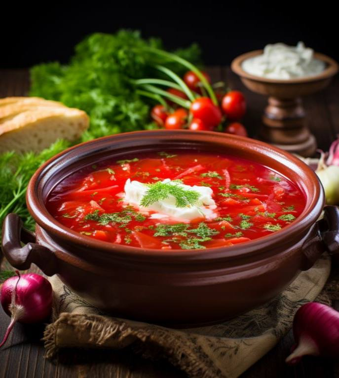
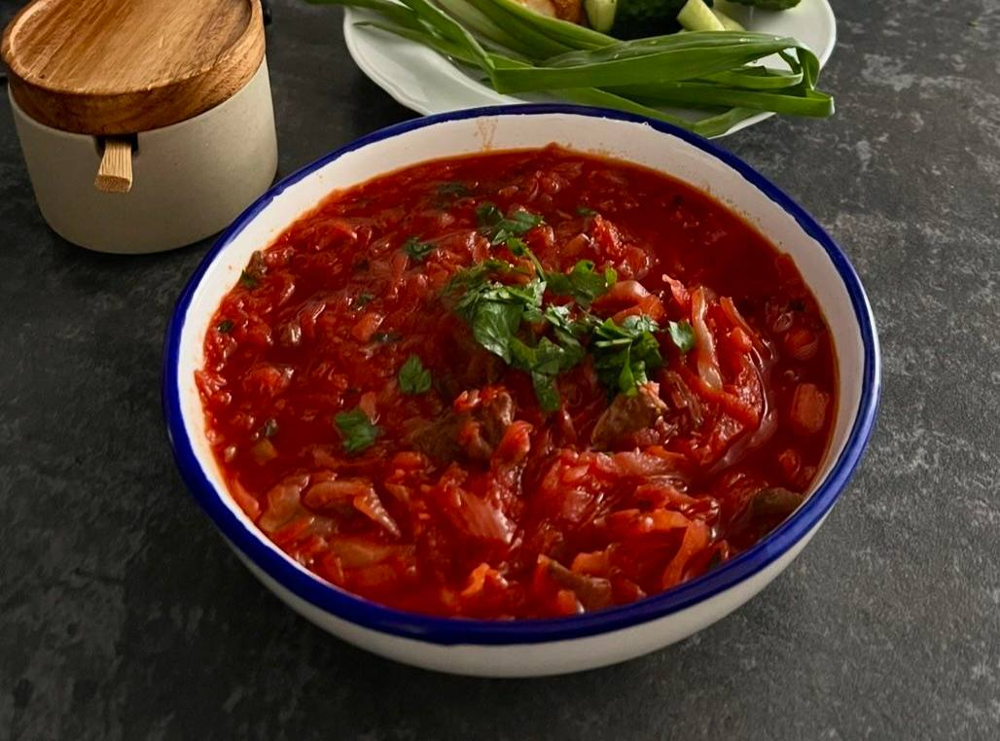
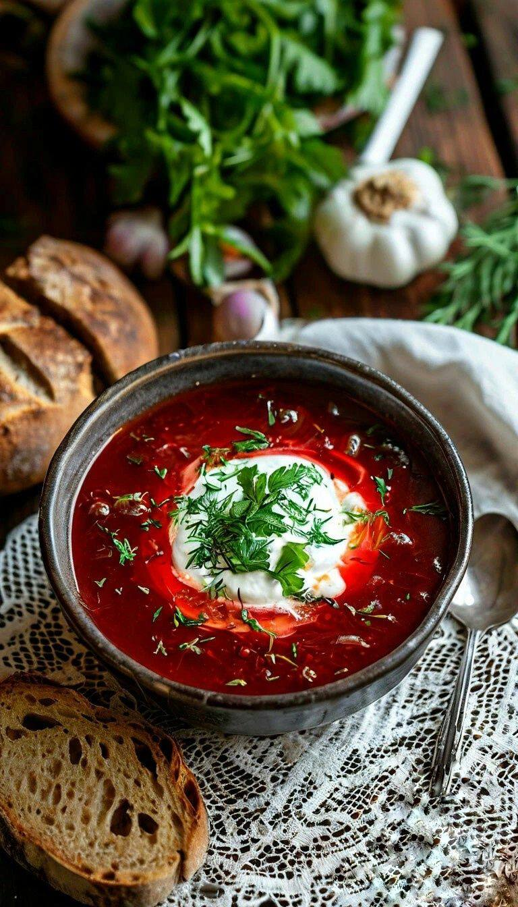
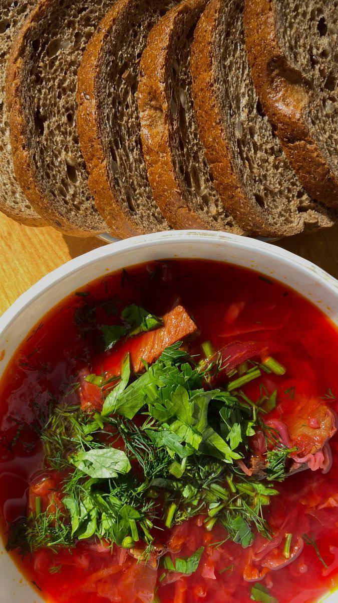
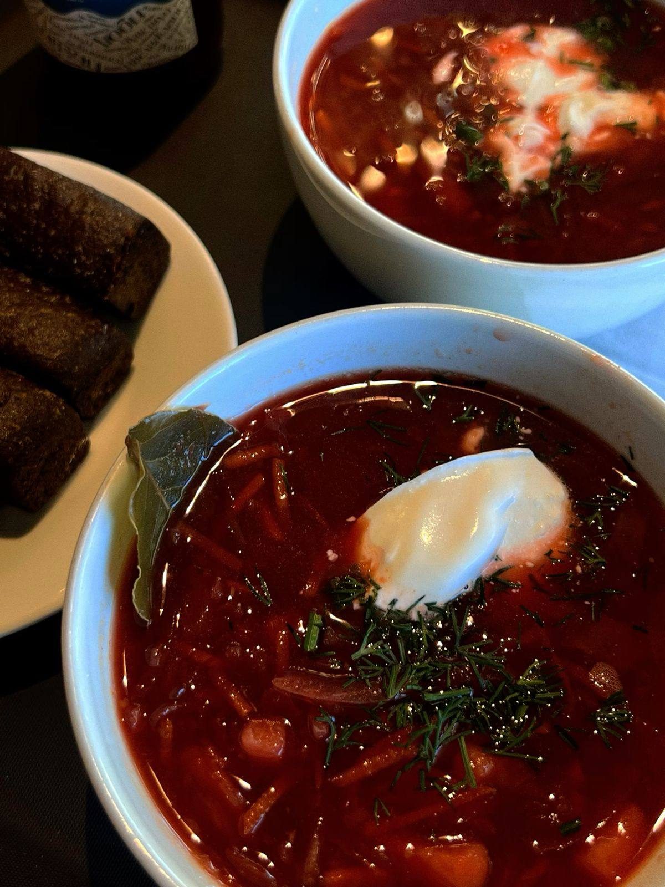

Рецепт №1
Борщ
Этот рецепт — не догма, а путеводитель. Мы разберем каждый этап, чтобы вы не просто сварили суп, а поняли его логику и смогли создать свой уникальный вкус.
Ингредиенты
на кастрюлю 4-5 л
Для бульона
- Говядина — 600-800 г
- Луковица (целая, неочищенная) — 1 шт.
- Морковь (целая) — 1 шт. (небольшая)
- Перец горошком — 5-7 шт.
Для заправки и овощей
- Свёкла средняя — 2-3 шт.
- Морковь — 1-2 шт.
- Лук репчатый — 2 шт.
- Томатная паста (качественная) — 2-3 ст. л.
- Помидоры свежие или в собственном соку
- Капуста белокочанная — 250-300 г
- Картофель — 3-4 шт.
- Сахар, соль, черный перец — по вкусу

Пошаговый процесс
Философия вкуса в трех актах
01
Фундамент — душа борща
Бульон
- Мясо промойте, положите в холодную воду. Это ключ: белки постепенно нагреваются и отдают сок в бульон, делая его насыщенным.
- Доведите до кипения на среднем огне, аккуратно снимите серую пену шумовкой. Не давайте бурно кипеть! После закипания убавьте огонь до минимума.
- Добавьте целые, тщательно вымытые, но неочищенные овощи (лук с шелухой, морковь). Шелуха даст красивый золотистый оттенок. Варите бульон под приоткрытой крышкой 1.5-2 часа, пока мясо не станет очень мягким.
- За 10 минут до готовности добавьте лавровый лист и перец горошком. Готовый бульон процедите, мясо отделите от кости и нарежьте кусочками. Бульон верните в чистую кастрюлю.
02
Магия цвета и сладости
Работа со свёклой
- Свёклу натрите на крупной терке или нарежьте тонкой соломкой.
- На сковороде разогрейте сало (оно даст аутентичный вкус) или масло. Обжарьте свёклу 5-7 минут на среднем огне.
- Добавьте 1 ст.л. томатной пасты, перемешайте и обжаривайте еще 2 минуты. Томат «привяжет» цвет.
03
Ароматная основа
Зажарка
- На отдельной сковороде обжарьте нарезанный кубиками лук до прозрачности.
- Добавьте натертую морковь, обжаривайте вместе до мягкости.
- Добавьте оставшуюся томатную пасту и/или мелко нарезанные свежие помидоры. Прогрейте все вместе 3-5 минут. Теперь у нас готова овощная заправка.
Борщ — живой. Он меняется на второй и третий день, становясь только вкуснее. Не бойтесь экспериментировать с пропорциями специй, видов капусты (можно добавить немного кислой) и видами мяса (отлично работает смесь говядины и свинины). Сварите свой идеал.





